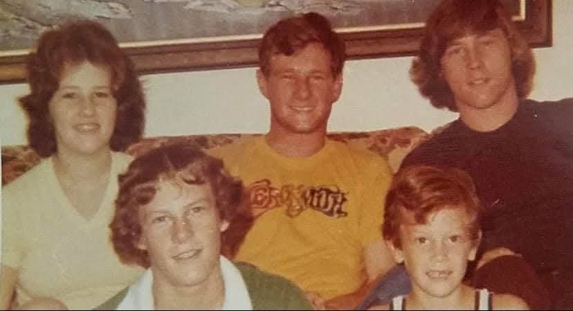

Judith Mae Palmer
9 February 1939 – 7 June 2006
Quick Facts
Immediate Family
Spouses
Homer William Brewster Jr. (18 March 1939–27 September 2000). A Fentress County, Tennessee marriage record/index names Homer and Judy Mae Palmer on 18 April 1956. Family accounts describe a second ceremony and repeated marriages/divorces, but no record of the second ceremony or other marriage dates has been located. An Ohio index records one Hamilton County divorce granted to Judith on 2 May 1968. [3, 4, 8]
Larry Clark. Family sources identify him as Judy’s later husband. A 6 September 1984 Ohio divorce index entry lists Larry Clark and a Judith M., both of Hamilton County, with the wife born in 1939; it records an eight-year marriage and one minor child. This is a strong possible match but omits her surname. The marriage date and place, the exact order of Judy’s marriages, and Larry’s full identity remain unresolved. [7]
Children
- With Homer: Victoria “Vicki” Brewster (born 1957), Michael Eugene Brewster (born 1958), Garry Anthony Brewster (born 24 December 1959), and Ronald “Ron” Brewster (born 1962). These birth years and relationships come from the family couple profile. [8]
- Barry T. Clark (25 August 1969–24 July 2008). The shared headstone identifies him as Judy’s son. Family accounts associate him with Judy’s later relationship with Larry Clark, but the records reviewed do not establish Barry’s father. Barry died after Judy, not before her. [6, 7]
Siblings
The Palmer grandparents’ obituaries name Judy, Mary Ann, and Penny among their grandchildren; family profiles identify the women as sisters. [8]
On Family Tree Sites
Couple / Family Folder
Life Timeline
1939 · age 0
Born 9 February in Cincinnati, Hamilton County, Ohio. The Social Security records and shared headstone give the date; the 1940 census index places her in her parents’ Cincinnati household. [1, 2, 5]
18 April 1956 · age 17
Married Homer William Brewster Jr. in Fentress County, Tennessee, according to the county marriage record/index. The application appears to give both ages as 18, which conflicts with their working birth dates; the image fields have not been fully reviewed. [3]
1957–1962 · ages 18–23
Four children were born to Judy and Homer, according to the family couple profile. [8]
2 May 1968 · age 29
An Ohio divorce index records a Hamilton County divorce granted to Judith from Homer after twelve years of marriage, with four minor children. Family accounts describe additional marriages/divorces, but the other events have not been located in records. [4, 8]
25 August 1969 · age 30
Barry T. Clark, identified as Judy’s son on their shared headstone, was born. The headstone does not identify his father. [6]
6 September 1984 · age 45
An Ohio divorce index lists Larry Clark and a Judith M., both of Hamilton County, with the wife born in 1939; it records an eight-year marriage and one minor child. It may refer to Judy, but does not state her surname, so the identification remains unresolved. [7]
7 June 2006 · age 67
Died as Judith M. Clark, according to the Social Security Death Index; her shared headstone gives the same date. Her place of death has not been established. [2, 5]
24 July 2008
Barry died two years after Judy, according to his shared headstone and Social Security death index. This corrects the family recollection that he died before her. [6]
Life Story
Judith Mae “Judy” Palmer was born in Cincinnati on 9 February 1939. Social Security records and the inscription on her shared headstone give that date. The 1940 census index places one-year-old Judith in the Cincinnati household of William P. Palmer and Mary J. Palmer; the census image was not transcribed in the reviewed notes. The 1956 Tennessee marriage record names William Palmer and Mary Jane Williams as the bride’s parents. Together with the Social Security Applications and Claims Index, those records support her parents’ identification as William Peter Palmer and Mary Jane Williams. [1, 2, 3, 5]
Judy and Homer William Brewster Jr. married in Fentress County, Tennessee, on 18 April 1956. The marriage record/index gives their ages as 18, but their working birth dates would make them 17. Their daughter Vicki later recalled that they eloped, that Homer had said he was 18, and that a man was paid to pose as Judy’s father so they could marry. Vicki also recalled a second ceremony after they returned home. That second ceremony has not been found in records. [3, 8, 9]
The family couple profile names four children with Homer: Vicki, Michael, Garry, and Ron. An Ohio index records one divorce granted to Judy in Hamilton County on 2 May 1968. Family accounts describe Judy and Homer marrying and divorcing more than once. Susan Moore, who married into the family, also recalled that Homer was abusive; this is preserved as her family testimony, not as a statement independently verified by a court or other record. [4, 8]
Family members remember Judy’s home in Hartwell, Cincinnati, as a gathering place for her children, grandchildren, and cousins. Rick’s memories include the backyard pool, a pet raccoon, and Judy insisting that the children use car seats. Amanda identified a family photograph as showing herself, her father Ron, Judy, and Judy’s companion Ralph. Family sources also describe a later relationship or marriage between Judy and Larry Clark. A 1984 Ohio divorce-index entry for Larry Clark and a Judith M. born in 1939 is a plausible match, but the index omits the wife’s surname. The exact marriage date and place, and Larry’s identity beyond the name, are not yet established. [7, 8]
Judy’s shared headstone identifies Barry T. Clark as her son and gives his dates as 25 August 1969–24 July 2008. Family accounts associate Barry with Judy’s later relationship with Larry, but the records reviewed here do not establish Barry’s father. The stone corrects the family recollection that Barry died before Judy: Barry died two years after her. A family memory also says Barry had HIV/AIDS; no independent medical record in the reviewed material confirms it. [6, 7, 8]
The Social Security Death Index records Judy as Judith M. Clark and gives her death date as 7 June 2006. It lists Rockaway Beach, Taney County, Missouri, as her last residence, not her death place. A shared headstone and cemetery indexes identify Spring Grove Cemetery in Cincinnati, although the cemetery’s online lookup did not return a record during the searches documented so far. The cemetery interment record and a death notice or certificate remain useful next sources. [2, 5, 10]
Photographs & Family Gallery




Sources & Records
- 1940 U.S. census index, Cincinnati, Ohio: Judith, age 1, in the household of William P. and Mary J. Palmer. The image was not transcribed in the reviewed archive. Social Security Applications and Claims Index entries, as cited on Judy’s FamilySearch/Geni profiles, give 9 February 1939 and parents William P. Palmer and Mary J. Williams. See FamilySearch profile GRK1-6KF; consult the original census and application records for full details.
- Social Security Death Index / Death Master File and Social Security Numident indexes for Judith M. Clark: born 9 February 1939, died 7 June 2006, last residence Rockaway Beach, Taney County, Missouri; Numident names Judith Mae Brewster and Judith M. Clark. SSDI entry; FamilySearch death index; FamilySearch Numident index.
- Tennessee County Marriages, 1790–1959, Fentress County: Homer William Brewster and Judy Mae Palmer, married 18 April 1956; the index names William Palmer and Mary Jane Williams as the bride’s parents. FamilySearch marriage record. The application image is FamilySearch image 272 of 634, page 416; the age fields appear to read 18, but the image and officiant’s return have not been fully examined.
- Ohio divorce index, Hamilton County, 2 May 1968: records a divorce granted to Judith from Homer after twelve years of marriage and four minor children, as summarized in Homer William Brewster Jr.’s profile. The source consulted is an index, not the full court file.
- Judith M. Palmer’s shared headstone at Spring Grove Cemetery: gives her dates as 9 February 1939–7 June 2006. Find a Grave memorial 228001578; the image is credited to Jil.
- Barry T. Clark’s shared headstone and Social Security death-index entry: the stone calls him Judith’s son and gives 25 August 1969–24 July 2008; the death-index entry agrees on his dates and lists Ohio issuance and Cincinnati last residence. Find a Grave memorial 228001842; SSDI entry. Neither source identifies his father.
- Ohio Department of Health divorce-index entry, Hamilton County, 6 September 1984, certificate 035410, volume 05370: lists Larry Clark, born 1940, and a Judith M., born 1939, both of Hamilton County; the wife’s surname is omitted. This may be Judy and Larry but is not conclusive by itself. Ohio Marriage/Divorce Search index.
- Family sources: the Homer William Brewster Jr. × Judith Mae Palmer couple profile, Vicki’s 7 October 2026 voice-message account of the elopement, Susan Moore’s family account of the Homer/Judy relationship, and family identification of photographs. These are preserved in the Homer × Judy family folder.
- Marriage to Larry Clark: a BillionGraves entry cited on Judy’s Geni profile names Larry as spouse; a Cincinnati city-directory listing is reported as “Larry Clark & Judith Palmer” / “Judy M Clark.” The images have not been read in the reviewed archive. This supports the family’s identification but does not supply a verified marriage date or Larry’s full identity. Research summary is in the Larry Clark profile.
- Burial: Find a Grave, Judith M. Palmer, memorial 228001578, and BillionGraves entries identify Spring Grove Cemetery. Spring Grove’s online burial lookup returned no matching record in the search noted 19 November 2026; the cemetery’s interment card has not been obtained.
- SortedByName, “Judith M Clark,” a compiled derivative entry cross-referencing Judith Mae Brewster, Judith Mae Clark, and Judy Mae Palmer; it reports the same dates, parents, and last residence and cites Social Security datasets. Compiled index. It is not an original application or independent proof.
Research Notes and Open Questions
- Death place remains unknown. The Social Security last-residence entry is Rockaway Beach, Taney County, Missouri; it does not establish where Judy died. A Missouri death certificate, June 2006 Cincinnati/Branson death notice, or funeral-home file could resolve this.
- The 1940 census image has not been transcribed in the reviewed archive, and the 1950 census household was not located in the previous FamilySearch-index search. Original Social Security application records should be inspected directly to document Judy’s birth and parents.
- Marriage-age conflict: Judy and Homer’s working birth dates make them 17 on 18 April 1956, while the marriage application appears to give both ages as 18. The image close-up and officiant’s return/signatures need a full review. Vicki’s account of a second ceremony remains uncorroborated by a located record.
- Repeated marriages/divorces to Homer are recalled by family members. One Hamilton County divorce index entry, 2 May 1968, has been identified; other dates and the reported second wedding remain unlocated.
- Larry Clark’s full identity, Judy’s marriage date/place to him, and when that relationship ended remain unresolved. The 1984 Ohio index lists a Larry Clark and Judith M. born in 1939, but does not give her surname. The 1963–1982 Hamilton County index search was incomplete/unclear in the archived notes; do not treat it as a definitive negative. Other Ohio and Kentucky jurisdictions remain to be checked.
- Barry’s headstone identifies him as Judy’s son and establishes that he died in 2008, after Judy’s 2006 death. Family sources associate Barry with Judy’s later Clark relationship, but the records reviewed do not identify his father. His 1969 Ohio birth record or Social Security application could answer that question.
- Burial at Spring Grove is supported by the shared marker and cemetery indexes, but the cemetery’s own online lookup did not return an entry. Request the interment card from Spring Grove to confirm placement and obtain any additional details.
- A different “Ronald H. / Judith M. Palmer, 1939” companion marker appears in a photo attached to Judy’s Find a Grave memorial. It is not used as Judy’s grave; it may belong to a different same-name couple. Judy’s shared marker with Barry is the one used here.
- The 19 November 2026 public tree/search/photo review found no new obituary, original vital record, independent photo, or book passage that resolves these questions. The WeRelate and WikiTree entries repeat information already in the project and were not counted as independent evidence.
DNA
No DNA matches linked to Judy yet.
Family Notes
Have a story, photo, correction, or record? Leave a note in Judy’s Family Notes document. Notes are reviewed before this profile is updated.
Profile history: Created 2 November 2026 from the family couple profile and research notes. Draft prepared 22 November 2026 for review: reorganized to the supplied template, consolidated spouse information, clarified sources and unresolved relationships, and corrected Barry’s death chronology. Not yet published.